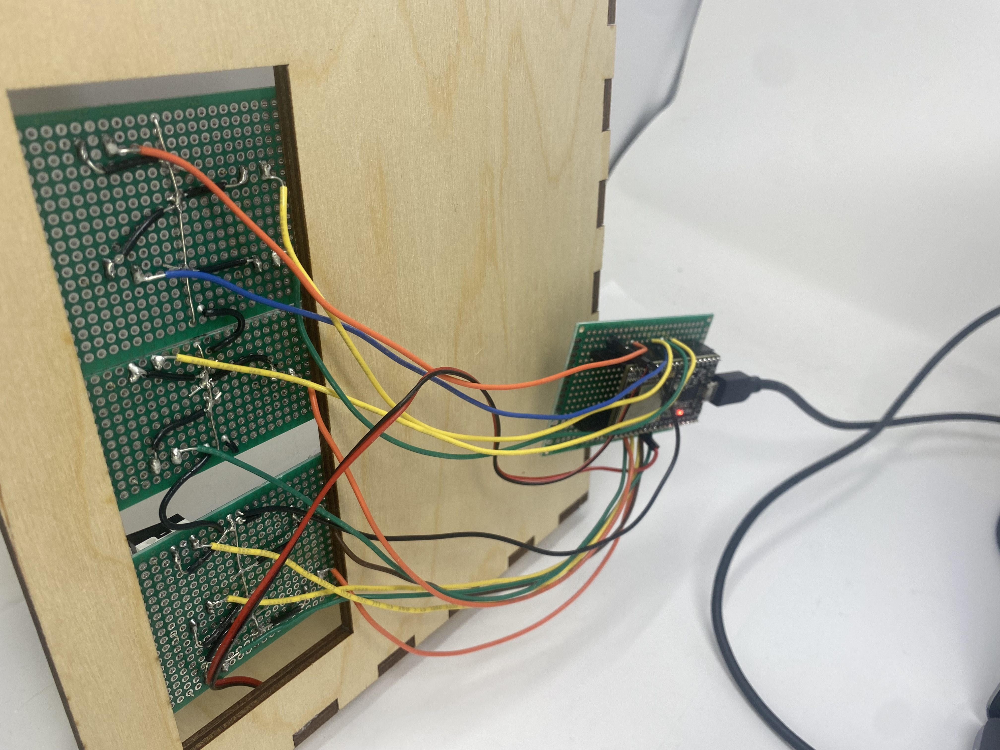

<div class="textcontainer">
<p class="margin"> </p>
<h3>Week 4: Microcontroller Programming</h3>
I soldered limit switches to a protoboard, and hooked up a speaker to pin 25, which is
an analogue output pin. I then used an arduino to generate a sin wave and discretize it into 255 voltage values,
that were then played through the speaker. Each key has a frequency corresponding to notes on the piano.
<p class="margin"></p>

<br></br>
I worked on
</div>